背景: 圆圈2岁10个月
地点：深圳东部华侨城·茶溪谷
人物：圆圈，圆圈爸和圆圈妈，圆圈大大姨和小金金表姐，圆圈二大姨和小嘟嘟表姐，圆圈外婆
点击蓝字
关注我们
文|圈圈妈 部分图片来自网络
1
1
1
这又是一个迟来的亲子游日记。
这一天是5月13日, 5月的第二个星期天，母亲节。
这是圆圈妈的第三个母亲节。
前两年，圆圈还小，我都不知道母亲节是什么滋味的，大概是浸泡在奶水和屎尿之间度日如年…
今年在圆圈爸的引导下，我终于听到两声祝福语…
“妈妈母亲节快乐！”圆圈兄弟异口同声地说。
可把老母亲激动得一塌糊涂！
在深圳待了快10年了，居然没有去过东部华侨城，实在不好意思说自己的是深圳人。借“母亲节”的光，来一场说走就走的旅行！
走你，深圳东部华侨城茶溪谷。
这个旅行攻略的特点是，亲子游，自驾游，正好有此行程安排的家长可以参考圆圈妈的这个茶溪谷攻略哦！
先看地图，简单说下茶溪谷：
茶溪谷是深圳东部华侨城的一个度假公园，位于深圳市盐田区大水坑公路，而东部华侨城，位于中国深圳大梅沙，占地近9万平方公里，是华侨城集团精心打造的国家生态旅游示范区和世界级度假旅游目的地。
茶溪谷度假公园主要包括：茵特拉根、湿地花园、三洲茶园、茶翁古镇，东部华侨城大剧院等。
看地图感觉园区很大，景点很多，但实际很多景点都是挨着一起。带着孩子走完一圈下来，看完大部分的景点，基本上4—5小时即可。
1
2
1
下面说说大家比较关心的问题：
园区门票：
茶溪谷的日常门票是180元成人票，如果通过其他平台渠道购买的话会便宜不少，我们在某宝订的门票146元。
茶溪谷还会不定期举办特惠活动，可以抢购到特价门票。，母亲节后的一个星期，居然有特价票89.9元即可入园。
因此，不着急去茶溪谷又想捡大便宜的，可以时刻留意下他们的官网和一些旅游平台的资讯。当然，特价票的意思意味着人山人海，体验度没那么好。
路线安排：
园区入口处可以免费领取地图，可根据自身行程安排，对部分景点有的放矢。
我们带着孩子，全部景点走完是不可能的，只好选最精华的景点，路线如下：森林小火车—茵特拉根小镇----茶翁古镇—茶溪栈桥—兰花园—四季花田
停车问题：
导航茶溪谷停车场，，有一大片空地可停放车辆，我们去的时候，人不多，上午9点半还有很多空位。
停车费有点小贵哦，不设上限。我们停了9个小时，停车费54元。
停车场出来走几步就是大门口咯。
外面有很多小摊贩卖太阳伞，帽子，眼镜或者纪念品等。
电子票和纸质门票分不同检票口，根据指示牌，听从工作人员指引就行啦。
大门口有各种创意新奇的动物雕塑，非常受小朋友的喜爱，圆圈趴在一个小蝴蝶身上不肯走！
1
3
1
因圆圈二大姨从惠州赶过来还没那么快跟大部队集合，我们进门之后从右手边上去四季花田。
当时是上午10点钟左右，太阳毒辣辣的，四季花田下没有树荫，逛了一会儿熬不住酷暑，又回到了大门口在茵特拉根广场那看鸽子。
11点15分，终于人齐！我们直奔森林小火车。
虽然是母亲节，但游客不多，基本上排队等候了15分钟就轮到我们了。
森林小火车全长6公里，穿越丛林峡谷，环绕水库一周，一排位置可坐4人，费用已经包含在门票内，一辆车差不多可以坐110人左右。
途中可以欣赏到整个茶溪谷的美景和不远处的华兴寺，还有那些号称几千万的联排别墅。
我只对别墅感兴趣，鼓励圆圈爸，如果希望圆圈兄弟顺利娶到媳妇，请把目标瞄准我们脚底下的别墅群！
小火车中途会停靠在大拐弯站，在这个站下车就可以进入大峡谷，如果买大峡谷和茶溪谷联票就可以直接进入，不打算去大峡谷的，千万别下车哦！注意听广播和工作人员的指引。
在小火车上晃了40分钟左右，我们在原来的上车地点下车，回到茵特拉根小镇，此时已经是12点半了。
饥肠咕噜的我们从小火车下来之后，直奔茵特拉根市场，那里有餐厅和肯德基，我们在津津茶餐厅，点了几个炒菜，狼吞虎咽。
温馨提示：景区内的饭菜很贵，味道还不咋滴，不要有太大期望，填饱肚子就差不多了。
餐厅对面有一些娱乐设施，门口摆放着一些仿真模型，圆圈抱着大黄蜂不肯松手。
这些项目收费较贵且没啥特色，实在不值得浪费时间在此。
费劲九牛二虎之力把圆圈兄弟从大黄蜂身上拖走，往下一站茶翁古镇。
经过咕咕钟舞台和茵特拉根集市，那里有很多鸽子飞来飞去，有许多游客给鸽子喂吃的。
圆圈第一次近距离接触鸽子，可兴奋了，巴不得把所有食物都贡献出来。
1
4
1
沿着湖，一直往前走，来到东部华侨城大剧院，但要两点多才有节目表演，我们只好放弃了，继续往茶翁古镇走。
茶翁古镇的一侧都是茶馆之类的店铺，装潢古典传统，韵味十足，可惜我带着两个小屁孩没这个闲工夫欣赏啊。
很多店铺都关门了，有点荒凉的样子，没啥看点，就草草略过了。
茶翁古镇出来，我们直奔枫溪藤桥。然后走了一段山路，继续走丹凤拱桥，到了栖霞回廊，这个属于观景台，可以看到不远处的三洲茶园，景色不错哦。
走到庚子义馆，纠结着要不要去三洲茶园，因为此时已经是下午3点钟了。
考虑到人多意见不统一，只好听从大众，往回走去四季花田。
三洲茶园就此别过了。
我们回程的时候看到有童趣溪这个景点，决定绕回去看，结果悲剧了，居然封闭维修中...
只好带圆圈走了一圈竹乐谷，这个景点有点坑。
就是些动物的仿真模型，挂在树上或者藏在树林里，适合小孩子探险闹着玩。
即便如此，圆圈也被这些小摆设吓得不轻，晚上睡梦中还大哭：“妈妈，树上有只大蚂蚁…”
竹乐谷出来之后，我们来到了著名景点---茶溪栈桥。
茶溪栈桥全长247米，高30米，桥宽2米，是茶溪谷最壮观的钢结构悬索景观吊桥。横跨于茶溪湿地上空，近赏茶田和古镇、远眺大峡谷和云海谷。
这个好刺激啊，走在上面会感觉到桥身在微微颤动，从桥上探出头往下，有一种不言而喻的刺激。
我能说，圆圈兄弟居然在这个茶溪栈桥上来回走了3遍！
在茶溪栈桥下方还有座湿地廊桥。圆圈兄弟走腻了茶溪栈桥，吵着要去桥下面的桥（湿地廊桥）好吧，我们穿过一片竹林又跑到湿地廊桥去过把瘾。
终于把桥都走了一遍之后，已经是下午4点半。我们一众人等早已弹尽粮绝了。
1
5
1
然而圆圈妈的体力可不是那么点能耐的，我们和大部队兵分两路，圆圈大姨回去大门口的肯德基等我们，我们带着圆圈兄弟继续去四季花田。
此时，夕阳西下，花田在夕阳印染下，含羞带怯，非常迷人。置身于花田间，花香四溢、泥土芬芳，令人遐想无限。
可是，圆圈状态很不好，哥俩轮流哭闹，吵着要抱，我的耐心快要被磨光了。
本来想继续走到湿地廊桥的，只好作罢了，沿着湿地栈桥往回走。
湿地栈桥是设在湖中央的桥，走在桥上，吹着风，非常惬意。
圆圈走在桥上马上来了兴致，在桥上蹦蹦跳跳，感觉桥都要断裂似的，引来一阵惊慌…
桥的设施比较陈旧了，围栏也有多处缺失 有很多地方都被白蚁咬掉了。
因此，带小孩的家长注意走这段桥的时候，记得拉着孩子。不要让他们在桥上蹦跳奔跑。
5点半从四季花田出来之后去肯德基与大部队会合。
准备回去的时候，看到咕咕钟舞台那里有表演，又去凑了下热闹。
表演可圈可点，有唱歌的，有舞蹈还有变脸和魔术，赶着回去没有细看，只好回程了。
1
6
1
圆圈妈有话说：
景区的矿泉水500ML一瓶7块钱，不想肉疼的话请记得准备好饮用水。
景区吃饭偏贵，一小碗面条都要18元一份，肯德基也不落俗套坐地起价。
因此，可以多准备点干粮和零食。
路上会经过竹林等阴暗的地方，请记得带驱蚊水，给孩子全身上下喷上。
深圳的五月份已经是酷暑难耐了，记得防嗮啊！
我们在园区待了9小时，基本上逛完大部分的景点，带着孩子出行，要量力而行。
我觉得有点惭愧了，只顾自己看山看水看风景，都不顾孩子的感受，其实走到四季花田，圆圈都有点虚脱了。
如想细细地把茶溪谷逛一圈，可以在附近酒店住一晚上，还能看到茶溪谷的夜景。
其实还有很多地方还没有去到。还有很多表演，我们也没有时间看。
茶溪谷值得细细品尝，好像一壶好茶需要轻轻地闻下，浅浅喝一口才能体会到其中的韵味。
1
END
1
本文系圆圈妈sgguy-com原创，来源于孖仔帮，专注双胞胎孕期育儿经验分享，著作权归孖仔帮所有。
长按识别二维码关注我们
孖仔帮
与您分享双胞胎育儿路上的囧人囧事
近日发现有些平台未经允许转载了圆圈妈的文章，在此声明下：
若喜欢圆圈妈的文章，无条件欢迎大家分享转发到朋友圈，如需转载至公众号请联系圆圈妈（微信sgguy-com）授权，或扫以下微信二维码。
各位双胎妈妈，更多孖仔帮原创育儿文章请猛戳 "阅读原文" ，或者直接上圆圈妈的个人博客，大把双胎孕期育儿心得经验分享。
阅读原文：
https://www.sgguy.com/twinsbang

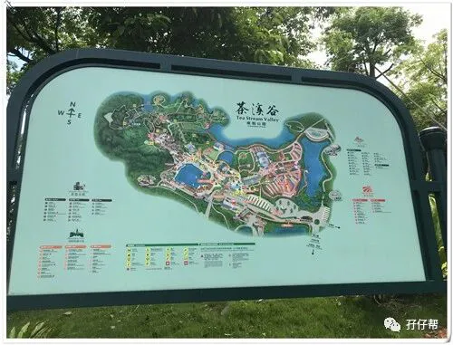
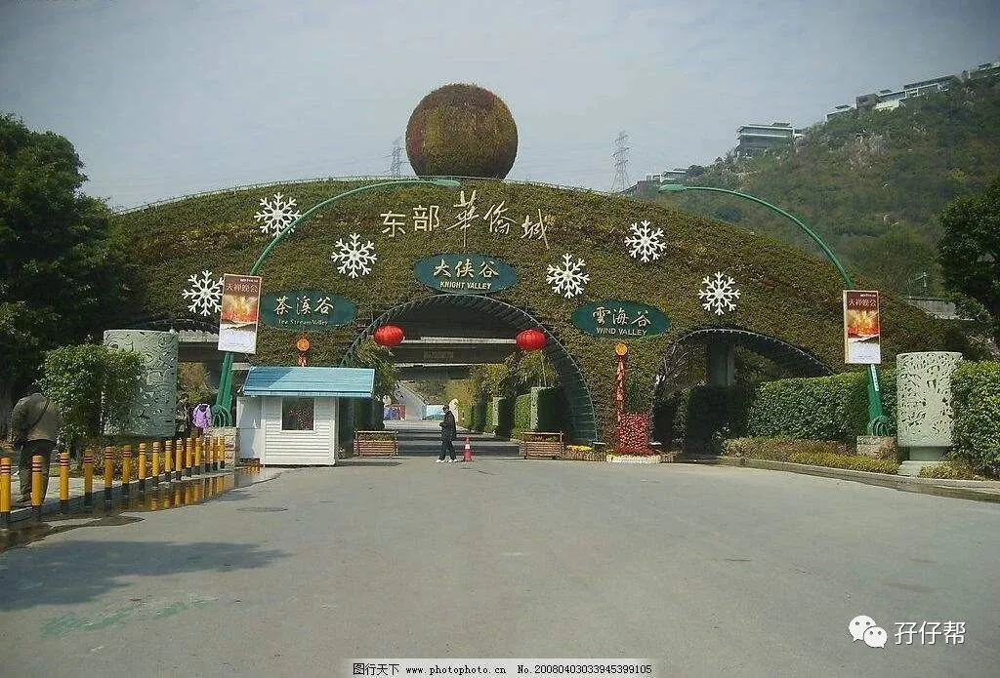
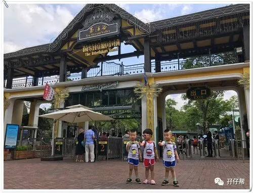
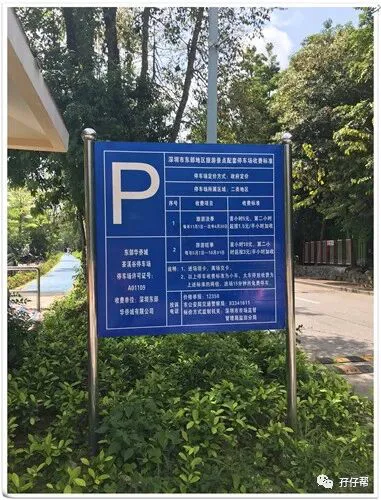
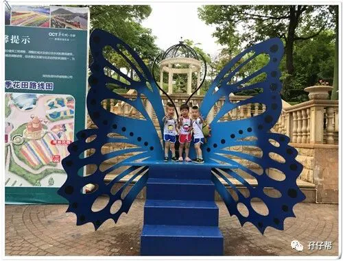
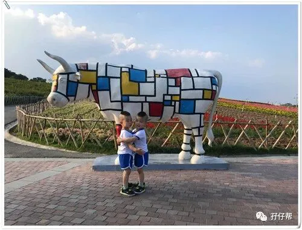
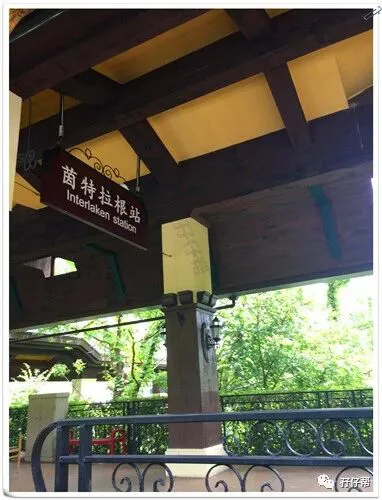
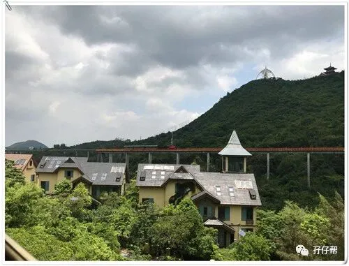
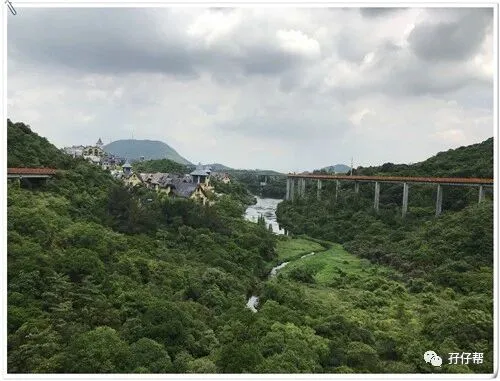
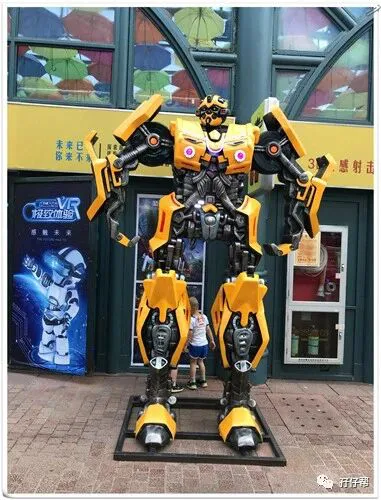
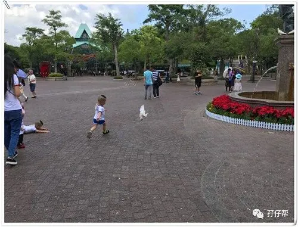
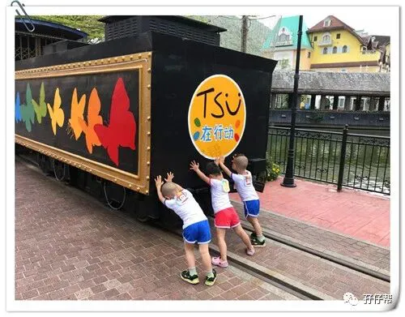
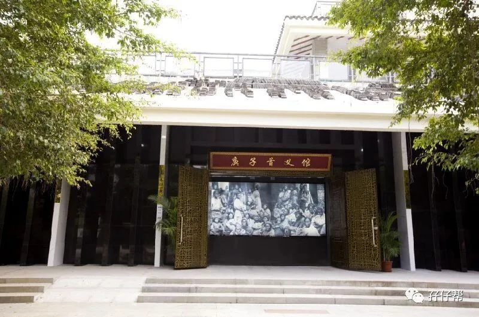
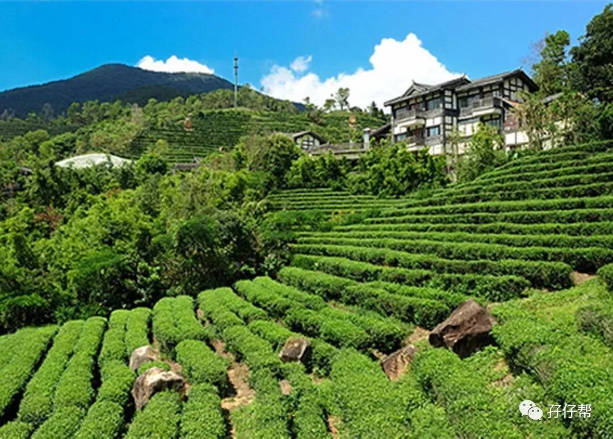
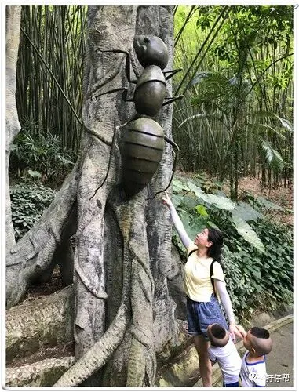
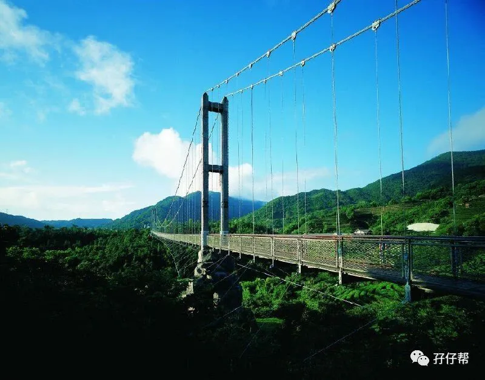
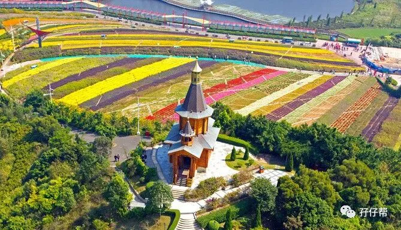
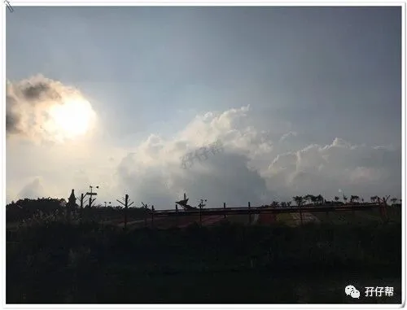
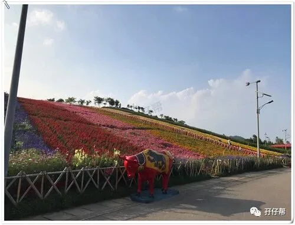
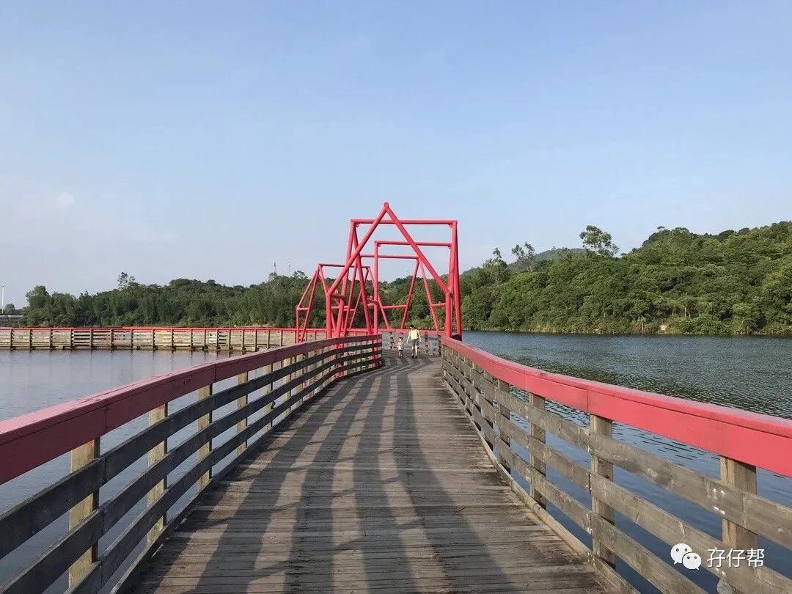
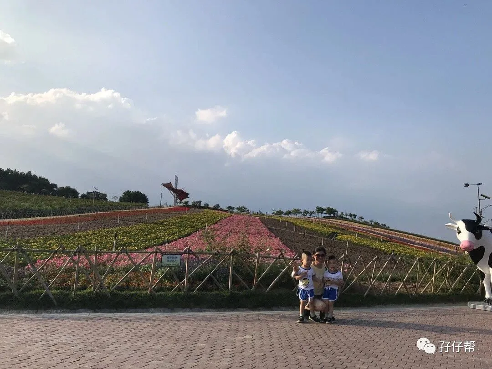